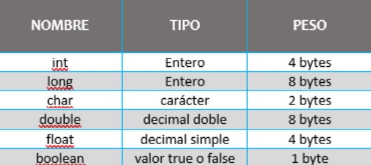

¿Qué es una variable en Java?
Una variable en términos de programación se define como un espacio de memoria que le proporciona el ordenador, dicha variable cuenta o debe contar con un nombre simbólico que va estar asociado a espacio antes mencionado. Es importante mencionar que este espacio va contener un dato o valor, que como su nombre lo dice dicho dato o valor puede cambiar en cualquier momento. Cada uno de los tipos de variables en java que mencionamos anteriormente van a tener un peso hablando en términos de informática y estos se miden en bytes, mencionaremos a continuación el peso de cada una y el valor o tipo de dato que puede ser asignado a cada tipo de variable, como se muestra en la siguiente imagen

Es importante señalar que en java no definimos como variable a las cadenas de caracteres es decir, a los String ya que este dato no es una variable sino una clase, es por ello y si hemos sido observadores cuando declaramos variables o datos primitivos todos los tipos de datos empiezan en letras minúsculas, por ejemplo: int, char, long etc pero si declaramos el dato String empieza con mayúscula.
Variables primitivas
Las variables primitivas son las variables básicas predefinidas del lenguaje.
byte: Es la unidad numérica más pequeña en Java y te aparta 1 byte en la memoria del programa. El número
almacenado en la variable byte debe ir de -128 a 127.
short: Otra unidad numérica, esta vez un poco más grande que byte. Almacena un valor de -32768 a 32767
con un gasto de memoria de 2 bytes.
int: El entero es una unidad que almacena números al igual que los anteriores y puede almacenar hasta
2*109 , con un gasto de memoria de 4 bytes.
long: El long es mucho más grande que los anteriores y ocupa 8 bytes. Igualmente se usa para almacenar
datos numéricos.
float: Esta variable es usada para almacenar en ella decimales simples y ocupa 4 bytes de memoria.
double: El double es especialmente para decimales dobles y ocupa 8 bytes.
char: Variable que almacena un carácter simple y ocupa 2 bytes.
boolean: Esta variable es muy diferente a las anteriores, ya que en este caso solo almacena dos tipos de
datos, los cuales pueden ser “true” o “false”.